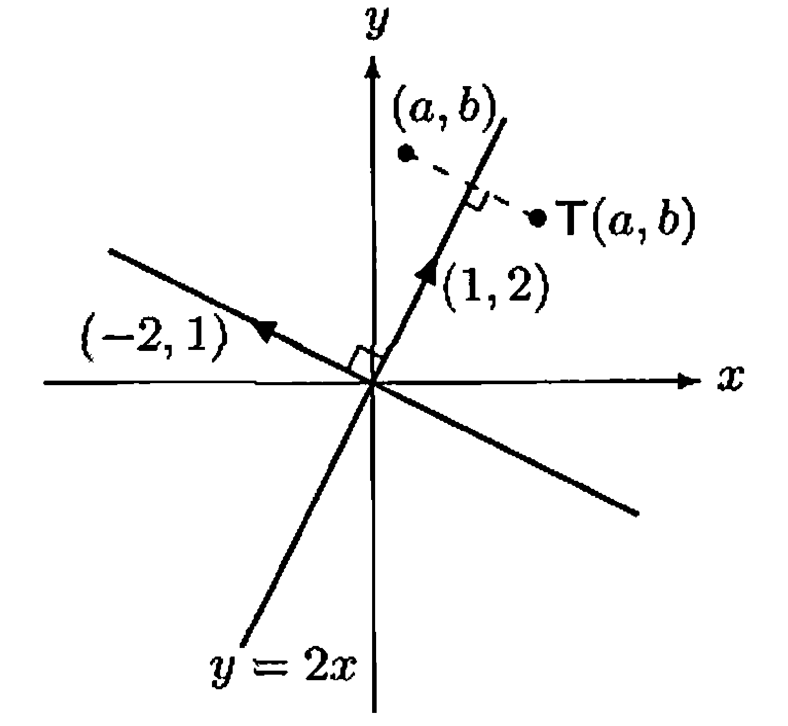

§ 12. The Change of Coordinate Matrix¶
The Change of Coordinate Matrix¶
Theorem 12.1 : Change of coordinate matrix is invertible.
Let \(\beta\) and \(\beta^{\prime}\) be two ordered bases for a finite-dimensional vector space \(V\), and let \(Q=[I_{V}]_{\beta^{\prime}}^{\beta}\). Then
- (a) \(Q\) is invertible.
- (b) For any \(v \in V\), \([v]_{\beta}=Q[v]_{\beta^{\prime}}\).
Proof
- (a) Since \(I_{V}\) is invertible, \(Q\) is invertible by Theorem 11.6.
-
(b) For any \(v \in V\),
\[ [v]_{\beta}=\left[I_{V}(v)\right]_{\beta}=[I_{V}]_{\beta^{\prime}}^{\beta}[v]_{\beta^{\prime}}=Q[v]_{\beta^{\prime}} \]by Theorem 10.14.
Definition 12.2 : Change of Coordinate Matrix
The matrix \(Q=[I_{V}]_{\beta^{\prime}}^{\beta}\) defined in Theorem 12.1 is called a change of coordinate matrix. Because of part (b) of the theorem, we say that \(Q\) changes \(\beta^{\prime}\)-coordinates into \(\beta\)-coordinates. Observe that if \(\beta=\left\{x_{1}, x_{2}, \ldots, x_{n}\right\}\) and \(\beta^{\prime}=\left\{x_{1}^{\prime}, x_{2}^{\prime}, \ldots, x_{n}^{\prime}\right\}\), then
for \(j=1,2, \ldots, n\); that is, the \(j\)th column of \(Q\) is \(\left[x_{j}^{\prime}\right]_{\beta}\).
Example 12.3 : Computing a change of coordinate matrix
In \(\mathbb{R}^{2}\), let \(\beta=\{(1,1),(1,-1)\}\) and \(\beta^{\prime}=\{(2,4),(3,1)\}\). Since
the matrix that changes \(\beta^{\prime}\)-coordinates into \(\beta\)-coordinates is
Thus, for instance,
Theorem 12.4 : Inverse of change of coordinate matrix changes coordinates back.
Let \(\beta\) and \(\beta^{\prime}\) be ordered bases for a finite-dimensional vector space \(V\). Let \(Q\) be the change of coordinate matrix that changes \(\beta^{\prime}\)-coordinates into \(\beta\)-coordinates, that is, \([v]_{\beta}=Q[v]_{\beta^{\prime}}\) for all \(v \in V\). Then \(Q^{-1}\) changes \(\beta\)-coordinates into \(\beta^{\prime}\)-coordinates; that is, \([v]_{\beta^{\prime}}=Q^{-1}[v]_{\beta}\) for all \(v \in V\). (See Exercise 12.11.)
Proof
Since \(Q\) is invertible by Theorem 12.1, the matrix \(Q^{-1}\) exists. Let \(v \in V\). From \([v]_{\beta}=Q[v]_{\beta^{\prime}}\), multiplying both sides by \(Q^{-1}\) yields \(Q^{-1}[v]_{\beta}=[v]_{\beta^{\prime}}\).
The Change of Basis Formula for a Linear Operator¶
Definition 12.5 : Linear Operator
Linear transformations that map a vector space \(V\) into itself is called a linear operator on \(V\).
Theorem 12.6 : Change of basis formula for a linear operator
Let \(T\) be a linear operator on a finite-dimensional vector space \(V\), and let \(\beta\) and \(\beta^{\prime}\) be ordered bases for \(V\). Suppose that \(Q\) is the change of coordinate matrix that changes \(\beta^{\prime}\)-coordinates into \(\beta\)-coordinates. Then
Proof
Let \(I\) be the identity transformation on \(V\). Then \(T=IT=TI\); hence, by Theorem 10.6,
Therefore \([T]_{\beta^{\prime}}=Q^{-1}[T]_{\beta} Q\).
Theorem 12.6 can be generalized to allow \(T: V \rightarrow W\), where \(V\) is distinct from \(W\). In this case, we can change bases in \(V\) as well as in \(W\) (see Exercise 12.8).
Example 12.7 : Computing the change of basis formula for a linear operator
Let \(T\) be the linear operator on \(\mathbb{R}^{2}\) defined by
and let \(\beta\) and \(\beta^{\prime}\) be the ordered bases in Example 12.3. The reader should verify that
In Example 12.3, we saw that the change of coordinate matrix that changes \(\beta^{\prime}\)-coordinates into \(\beta\)-coordinates is
and it is easily verified that
Hence, by Theorem 12.6,
To show that this is the correct matrix, we can verify that the image under \(T\) of each vector of \(\beta^{\prime}\) is the linear combination of the vectors of \(\beta^{\prime}\) with the entries of the corresponding column as its coefficients. For example, the image of the second vector in \(\beta^{\prime}\) is
Notice that the coefficients of the linear combination are the entries of the second column of \([T]_{\beta^{\prime}}\).
Example 12.8 : Using a change of basis to compute \(T(a,b)\)

Figure 12.1.
Recall the reflection about the \(x\)-axis in Example 8.4. The rule \((x, y) \rightarrow(x,-y)\) is easy to obtain. We now derive the less obvious rule for the reflection \(T\) about the line \(y=2 x\). We wish to find an expression for \(T(a, b)\) for any \((a, b)\) in \(\mathbb{R}^{2}\). Since \(T\) is linear, it is completely determined by its values on a basis for \(\mathbb{R}^{2}\). Clearly, \(T(1,2)=(1,2)\) and \(T(-2,1)=-(-2,1)=(2,-1)\). Therefore if we let
then \(\beta^{\prime}\) is an ordered basis for \(\mathbb{R}^{2}\) and
Let \(\beta\) be the standard ordered basis for \(\mathbb{R}^{2}\), and let \(Q\) be the matrix that changes \(\beta^{\prime}\)-coordinates into \(\beta\)-coordinates. Then
and \([T]_{\beta^{\prime}}=Q^{-1}[T]_{\beta} Q\). We can solve this equation for \([T]_{\beta}\) to obtain that \([T]_{\beta}=Q[T]_{\beta^{\prime}} Q^{-1}\). Because
the reader can verify that
Since \(\beta\) is the standard ordered basis, it follows that \(T\) is left-multiplication by \([T]_{\beta}\). Thus for any \((a, b)\) in \(\mathbb{R}^{2}\), we have
Corollary 12.9 : Matrix representation of \(L_A\) in an arbitrary basis
Let \(A \in \mathrm{M}_{n \times n}(F)\), and let \(\gamma\) be an ordered basis for \(F^{n}\). Then \([L_{A}]_{\gamma}=Q^{-1} A Q\), where \(Q\) is the \(n \times n\) matrix whose \(j\)th column is the \(j\)th vector of \(\gamma\).
Example 12.10 : Computing \([L_A]_{\gamma}\)
Let
and let
which is an ordered basis for \(\mathbb{R}^{3}\). Let \(Q\) be the \(3 \times 3\) matrix whose \(j\)th column is the \(j\)th vector of \(\gamma\). Then
So by the preceding corollary,
Similarity¶
Definition 12.11 : Similarity
Let \(A\) and \(B\) be matrices in \(\mathrm{M}_{n \times n}(F)\). We say that \(B\) is similar to \(A\) if there exists an invertible matrix \(Q\) such that \(B=Q^{-1} A Q\).
Theorem 12.12 : Similarity is an equivalence relation.
The relation of similarity is an equivalence relation on \(\mathrm{M}_{n \times n}(F)\).
Proof
-
Reflexive.
For any \(A \in \mathrm{M}_{n \times n}(F)\), we have \(A=I_{n}^{-1} A I_{n}\), so \(A\) is similar to \(A\). -
Symmetric.
Suppose that \(B\) is similar to \(A\). Then \(B=Q^{-1} A Q\) for some invertible \(Q\). Multiplying on the left by \(Q\) and on the right by \(Q^{-1}\) gives \(A=Q B Q^{-1}\), hence \(A\) is similar to \(B\). -
Transitive.
Suppose that \(B\) is similar to \(A\) and that \(C\) is similar to \(B\). Then \(B=Q^{-1} A Q\) and \(C=P^{-1} B P\) for some invertible matrices \(P\) and \(Q\). Thus\[ C=P^{-1} Q^{-1} A(Q P). \]Since \((QP)(P^{-1}Q^{-1})=I_{n}\) and \((P^{-1}Q^{-1})(QP)=I_{n}\), the matrix \(QP\) is invertible with inverse \(P^{-1}Q^{-1}\). Hence \(C=(Q P)^{-1} A(Q P)\), so \(C\) is similar to \(A\).
So we need only say that \(A\) and \(B\) are similar.
Corollary 12.13 : Matrix representations of a linear operator are similar.
Let \(T\) be a linear operator on a finite-dimensional vector space \(V\), and let \(\beta\) and \(\beta^{\prime}\) be any ordered bases for \(V\). Then \([T]_{\beta^{\prime}}\) is similar to \([T]_{\beta}\).
Proof
By Theorem 12.6, \([T]_{\beta^{\prime}}=Q^{-1}[T]_{\beta} Q\) for the change of coordinate matrix \(Q\). By Definition 12.11, this means \([T]_{\beta^{\prime}}\) is similar to \([T]_{\beta}\).
Exercise¶
Exercise 12.8
Prove the following generalization of Theorem 12.6. Let \(T: V \rightarrow W\) be a linear transformation from a finite-dimensional vector space \(V\) to a finite-dimensional vector space \(W\). Let \(\beta\) and \(\beta^{\prime}\) be ordered bases for \(V\), and let \(\gamma\) and \(\gamma^{\prime}\) be ordered bases for \(W\). Then \([T]_{\beta^{\prime}}^{\gamma^{\prime}}=P^{-1}[T]_{\beta}^{\gamma} Q\), where \(Q\) is the matrix that changes \(\beta^{\prime}\)-coordinates into \(\beta\)-coordinates and \(P\) is the matrix that changes \(\gamma^{\prime}\)-coordinates into \(\gamma\)-coordinates.
Exercise 12.10
Prove that if \(A\) and \(B\) are similar \(n \times n\) matrices, then \(\operatorname{tr}(A)=\operatorname{tr}(B)\).
Hint: Use Exercise 10.13.
Exercise 12.11
Let \(V\) be a finite-dimensional vector space with ordered bases \(\alpha, \beta\), and \(\gamma\).
- (a) Prove that if \(Q\) and \(R\) are the change of coordinate matrices that change \(\alpha\)-coordinates into \(\beta\)-coordinates and \(\beta\)-coordinates into \(\gamma\)-coordinates, respectively, then \(RQ\) is the change of coordinate matrix that changes \(\alpha\)-coordinates into \(\gamma\)-coordinates.
- (b) Prove that if \(Q\) changes \(\alpha\)-coordinates into \(\beta\)-coordinates, then \(Q^{-1}\) changes \(\beta\)-coordinates into \(\alpha\)-coordinates.
Exercise 12.13
Let \(V\) be a finite-dimensional vector space over a field \(F\), and let \(\beta=\left\{x_{1}, x_{2}, \ldots, x_{n}\right\}\) be an ordered basis for \(V\). Let \(Q\) be an \(n \times n\) invertible matrix with entries from \(F\). Define
and set \(\beta^{\prime}=\left\{x_{1}^{\prime}, x_{2}^{\prime}, \ldots, x_{n}^{\prime}\right\}\). Prove that \(\beta^{\prime}\) is a basis for \(V\) and hence that \(Q\) is the change of coordinate matrix changing \(\beta^{\prime}\)-coordinates into \(\beta\)-coordinates.
Exercise 12.14
Prove the converse of Exercise 12.8: If \(A\) and \(B\) are each \(m \times n\) matrices with entries from a field \(F\), and if there exist invertible \(m \times m\) and \(n \times n\) matrices \(P\) and \(Q\), respectively, such that \(B=P^{-1} A Q\), then there exist an \(n\)-dimensional vector space \(V\) and an \(m\)-dimensional vector space \(W\) (both over \(F\)), ordered bases \(\beta\) and \(\beta^{\prime}\) for \(V\) and \(\gamma\) and \(\gamma^{\prime}\) for \(W\), and a linear transformation \(T: V \rightarrow W\) such that
Hints: Let \(V=F^{n}\), \(W=F^{m}\), \(T=L_{A}\), and \(\beta\) and \(\gamma\) be the standard ordered bases for \(F^{n}\) and \(F^{m}\), respectively. Now apply the results of Exercise 12.13 to obtain ordered bases \(\beta^{\prime}\) and \(\gamma^{\prime}\) from \(\beta\) and \(\gamma\) via \(Q\) and \(P\), respectively.